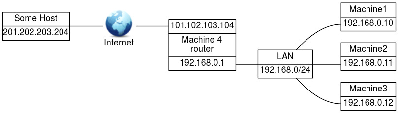
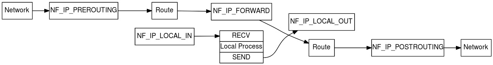
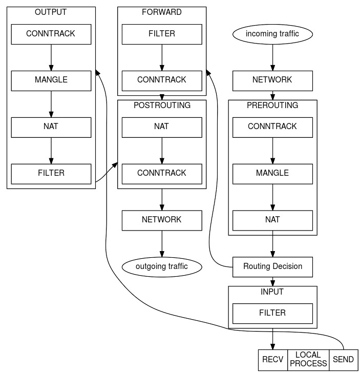
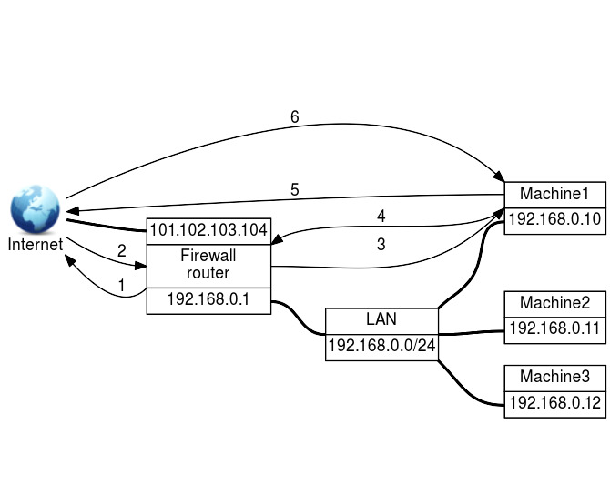
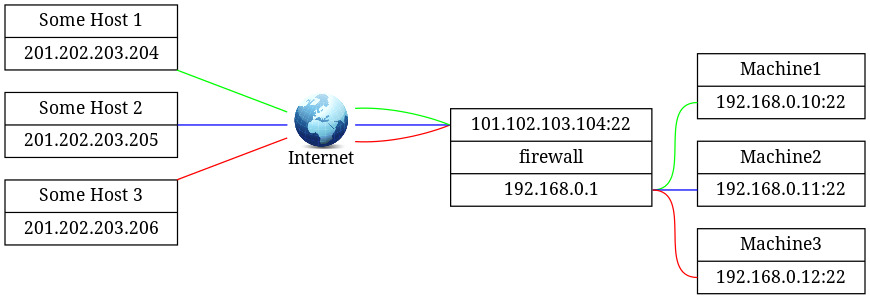
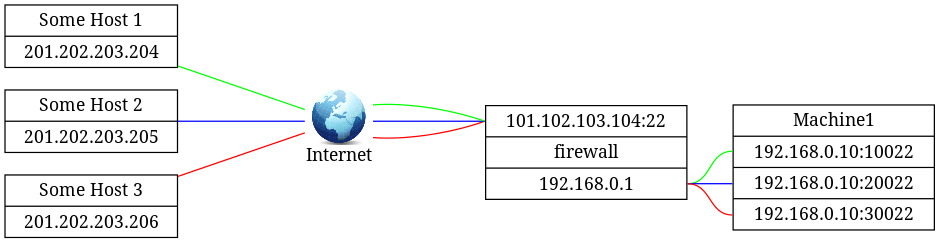

Configuring a router (212.1)
Configuring a router (212.1)¶
Candidates should be able to configure a system to perform network address translation (NAT, IP masquerading) and state its significance in protecting a network. This objective includes configuring port redirection, managing filter rules and averting attacks.
Key Knowledge Areas¶
-
Network Address Translation (NAT)
-
iptables configuration files, tools and utilities
-
Tools, commands and utilities to manage routing tables
-
Private address ranges
-
Port redirection and IP forwarding
-
List and write filtering and rules that accept or block datagrams based on source or destination protocol, port and address
-
Save and reload filtering configurations
-
Awareness of ip6tables and filtering
Terms and Utilities¶
-
/proc/sys/net/ipv4 -
/etc/services -
iptables
Private Network Addresses¶
Why do Private Network Addresses exist? It has been common practice to Private Network Addresses assign globally-unique addresses to all hosts that use IP addresses. In order to extend the life of the IPv4 address space, address registries are requiring more justification concerning the need for extra address space than ever before, which makes it harder for organizations to acquire additional address space.
Hosts within enterprises that use IP can be partitioned into three categories:
-
Category 1
-
These hosts do not require access to the hosts of other IPCategory 1 enterprises or on the Internet itself; hosts within this category may use IP addresses that are unambiguous within an enterprise, but may be ambiguous between enterprises.
-
Category 2
- These are hosts that need access to a limited set of outside IPCategory 2 services (e.g., E-mail, FTP, netnews, remote login), which can be handled by mediating gateways (e.g., application layer gateways). For many hosts in this category, unrestricted external access (provided via IP connectivity) may be unnecessary and even undesirable (for privacy/security reasons). These hosts, the same as category 1 hosts, may use IP addresses that are unambiguous within an enterprise, but may be ambiguous between enterprises.
-
Category 3
- These hosts need network-layer access outside the enterprise IPCategory 3 (provided via IP connectivity); hosts in the last category require IP addresses that are globally unambiguous.
We will refer to the hosts in the first and second categories as "private" and to hosts in the third category as "public".
Many applications require connectivity only within one enterprise and do not need external (outside the enterprise) connectivity for the majority of internal hosts. In larger enterprises it is often easy to identify a substantial number of hosts using TCP/IP that do not need network-layer connectivity outside the enterprise.
The Internet Assigned Numbers Authority (IANA) has reserved the 10/8 172.16/12 192.168/16 following three blocks of the IP address space for private internets:
1 2 3 | |
We will refer to the first block as "24-bit block", the second as "20-bit block", and to the third as "16-bit" block. Note that when no subnetting is used (i.e. in pre- Classless Inter-Domain Routing (CIDR) notation) the first block is nothing but a single class A network number, while the second block is a set of 16 contiguous class B network numbers and third block is a set of 256 contiguous class C network numbers.
Even though IPv6 addresses are not likely to run out in the foreseeable future, the need for allocating private addresses has been recognized. RFC4193 describes address block fc00::/7, which is the approximate counterpart of the IPv4 private addresses described above.
In addition to private IP addresses, IPv6 re-introduces the concept of link-local addresses, valid only for communications within the network segment (link) or the broadcast domain that the host is connected to. Routers do not forward packets with link-local addresses, because they are not guaranteed to be unique outside their network segment. In IPv4, the network range 169.254.0.0/16 was reserved for interfaces to allocate an IP address to themselves automatically. In practice, finding an IP address in this range on an interface generally means that DHCP allocation has failed, as link-local addressing is not generally used in IPv4 networks.
In IPv6 networks, interfaces always allocate a link-local address in addition to potentially other configured or allocated IPv6 addresses. Therefore, IPv6 interfaces usually have more than one address. Link-local address are an integral part of the IPv6 protocol standard to facilitate neighbour discovery (NDP) and allocating globally unique IP addresses using DHCP6. Interfaces configured for IPv6 use part of their MAC address as a means to create a (hopefully) unique link-local address in the fe80::/64 range.
Network Address Translation (NAT)¶

The figure above displays a hypothetical situation which will serve as an example in the following explanation.
This section describes Network Address Translation (NAT), which is a technique to rewrite the source or destination address (or sometimes both) of certain IP traffic. It can be used to enable hosts using a private IP address to communicate with hosts using a globally unique IP address. NAT is primarily an IPv4 concept. IPv6 discourages the use of NAT, because its creators believed it causes more problems than it solves. Under certain circumstances beyond the scope of this book, however, a need to rewrite IPv6 addresses may arise.
"The Firm" has four machines, 1 to 4, which are connected via a network switch and have private IP addresses in the 192.168.x.x range. Machine 4 serves as a router to the Internet and has two network interfaces. One connects the router to The Firm's internal network via the network switch and has a private IP address of 192.168.0.1, while the other connects the router to the Internet and has a valid (dynamic) IP address of 101.102.103.104.
Let's say that the user at Machine 2 wishes to look at a web page on Some Host (http://SomeHost.example) with an IP address of 201.202.203.204. To be able to see the web page, Machine 2 must be able to get information from the Internet and thus must be, in some way, connected to the Internet. And indeed, Machine 2 has an indirect connection to the Internet via Machine 4, but how can this work? Machine 2 has a private IP address which is not supported (routed) on the Internet!
This is where NAT kicks in. Machine 4, the router, replaces the private IP address of Machine 2 (and also of Machine 1 and 3 if needed) with its own IP address before sending the request to Some Host. Some Host thinks that a machine with IP address 101.102.103.104 asked for the web page and responds by sending the web page to Machine 4.
Machine 4 knows that it has replaced the IP address of Machine 2 with its own before sending the request to Some Host so it also knows that the answer it got to the request has to go to Machine 2. Machine 4 accomplishes this by replacing its own IP address in the answer by the IP address of Machine 2.
This is in a nutshell how NAT works. For more detailed information consult RFC1631
The Linux firewall, an overview¶
Implementation¶
The Linux firewall is implemented in
the kernel (as of version 2.3.15). The NETFILTER modules implement the
packet filtering rules. The user space application iptables is used to
configure these rules.
Netfilter "hooks"¶
As the figure above shows, netfilter supports five different hooks in netfilterhooks the protocol stack. These hooks enable us to examine and modify (if necessary) every packet passing through the kernel.

NF_ACCEPT
- Continue traversal as normal. iptablesNF_ACCEPT
NF_DROP
- Drop the packet and do not continue traversal. iptablesNF_DROP
NF_QUEUE
- Queue the packet for userspace handling. iptablesNF_QUEUE
NF_REPEAT
- Call this hook again. iptablesNF_REPEAT
NF_STOLEN
- Take over (absorb) the packet but do not continue traversal. iptablesNF_STOLEN
Tables and Chains¶
By default five chains (the netfilter hooks) and three tables are supported. As the figure below shows, certain chains are only valid for certain tables.
| | |CHAIN| | | | |----|----|----|----|----|----|----| | | |PREROUTING|INPUT|FORWARD|OUTPUT|POSTROUTING| |TABLE|MANGLE|V| | |V| | | |NAT|V| | |V|V| | |FILTER| |V|V|V| |
The FILTER table¶
IPTABLESFILTER The FILTER table is used for filtering packets. The filter table contains three chains. The INPUT chain is used for all packets that are intended for the firewall itself. The FORWARD chain is used for all packets that come from outside the firewall and are destined for another machine outside the firewall. These packets must flow through the firewall. The OUTPUT chain is used for all packets generated by the firewall.
The NAT table¶
IPTABLESNAT The NAT table is used for Network Address Translation. The NAT table contains three chains. The PREROUTING chain is the first used to alter incoming packets, before any routing decision has taken place. The OUTPUT chain is used to alter packets generated by the firewall. The POSTROUTING chain is the last chain where packets can be altered as they leave the firewall. Note that traffic flowing through the firewall passes the PREROUTING and POSTROUTING chains, whereas traffic originated by the firewall passes the OUTPUT and POSTROUTING chains.
The MANGLE table¶
IPTABLESMANGLE The MANGLE table is used to mangle packets. We can change several things but we can't do masquerading or network address translation here. The mangle table contains two chains. The PREROUTING chain is the first chain to alter incoming packets, before any routing decision has taken place. The OUTPUT chain is used to alter packets generated by the firewall.
Connection tracking: Stateful Firewalling¶
IPTABLESstateful Firewalls that are able to do connection tracking are called Stateful Firewall Stateful Firewalls. These firewalls keep track of established connections by memorizing the source and destination addresses and port numbers (so-called 5-tuples) mostly in order to determine valid return traffic. For protocols that do not use port numbers (e.g. ICMP) other properties are maintained. When using a stateful firewall, firewall rules have to be configured for traffic going one way only, as valid return traffic is passed automatically by a catch-all rule.
The iptables option used for connection tracking is iptables--state
state the --state option.
state
- This module, when combined with connection tracking, allows access to the connection tracking state for this packet.
--state state
- Where state is a comma-separated list of the connection states to match. Possible states are: NEW, ESTABLISHED, RELATED, and INVALID.
<!-- -->
ip_conntrack
- The main connection-tracking code. iptablesip_conntrack ip_conntrack
ip_conntrack_ftp
- Additional code needed to track ftp connections, both active and iptablesip_conntrack_ftp ip_conntrack_ftp passive.
The connection tracking modules have hooks into PREROUTING, FORWARD, OUTPUT and POSTROUTING.
Hooks, Tables and Chains put together¶
Putting what we've discussed so far into one picture:

Adding extra functionality¶
ACCEPT
- Let the packet through. iptablesACCEPT
DROP
- Absorb the packet and forget about it. iptablesDROP
QUEUE
- Pass the packet to user space. iptablesQUEUE
RETURN``
- Stop traversing this chain and resume at the next rule in the previous calling chain. If the end of a built-in chain is reached or a rule in a built-in chain with target RETURN matches the packet, the target specified in the chain policy determines the fate of the packet. iptablesRETURN
Included in the standard distribution are a number of target extensions
for which support in the kernel must be enabled if you wish to use them.
Consult the man page of iptables for further details. Most of these
targets have options. The extension LOG for instance, has the following
five options: "--log-level", "--log-prefix", "--log-tcp-sequence",
"--log-tcp-options", "--log-ip-options". Please consult the man page
for details on options per target.
LOG
- Turn on kernel logging of matching packets. When this option iptablesLOG is set for a rule, the Linux kernel will print some information on all matching packets (such as most IP header fields) via printk().
MARK
- This is used to set the netfilter mark value associated with iptablesMARK the packet. It is only valid in the mangle table.
REJECT
- This is used to send back an error packet in response to the iptablesREJECT matched packet; otherwise, it is equivalent to DROP. This target is only valid in the INPUT, FORWARD and OUTPUT chains and user-defined chains which are only called by those chains.
TOS
- This is used to set the 8-bit Type of Service field in the IP iptablesTOS header. It is only valid in the mangle table.
MIRROR
- This is an experimental demonstration target which inverts iptablesMIRROR the source and destination fields in the IP header and retransmits the packet. It is only valid in the INPUT, FORWARD and OUTPUT chains and user-defined chains which are only called by those chains.
SNAT
- This target is only valid in the POSTROUTING chain of the iptablesSNAT SNAT nat table. It specifies that the source address of the packet should be modified (and all future packets in this connection will also be mangled), and rules should cease being examined.
DNAT
- This target is only valid in the PREROUTING, OUTPUT and iptablesDNAT DNAT user-defined chains (which are only called by those chains) of the nat table. It specifies that the destination address of the packet should be modified (and all future packets in this connection will also be mangled), and rules should cease being examined.
MASQUERADE
- This target is only valid in the POSTROUTING chain of the iptablesMASQUERADE nat table. It should only be used with dynamically assigned IP (dialup) connections: if you have a static IP address, you should use the SNAT target. Masquerading is equivalent to specifying a mapping to the IP address of the interface the packet is going out, but also has the effect that connections are forgotten when the interface goes down. This is the correct behaviour when the next dialup is unlikely to have the same interface address (and hence any established connections are lost anyway).
REDIRECT
- This target is only valid in the PREROUTING, OUTPUT and iptablesREDIRECT user-defined chains (which are only called by those chains) of the nat table. It alters the destination IP address to send the packet to the machine itself (locally-generated packets are mapped to the 127.0.0.1 address).
tcp
- These extensions are loaded if "--protocol tcp" is specified, iptablestcp and no other match is specified.
udp
- These extensions are loaded if "--protocol udp" is specified, iptablesudp and no other match is specified.
icmp
- This extension is loaded if "--protocol icmp" is specified, and iptablesicmp no other match is specified.
mac
- Match source MAC address. It must be of the form iptablesmac XX:XX:XX:XX:XX:XX. Note that this only makes sense for packets entering the PREROUTING, FORWARD or INPUT chains for packets coming from an ethernet device.
limit
- This module matches at a limited rate using a token bucket iptableslimit filter: it can be used in combination with the LOG target to give limited logging. A rule using this extension will match until this limit is reached (unless the "!" flag is used).
multiport
- This module matches a set of source or destination ports. Up to iptablesmultiport 15 ports can be specified. It can only be used in conjunction with -p tcp or -p udp.
mark
- This module matches the netfilter mark field associated with a iptablesmark packet (which can be set using the MARK target).
owner
- This module attempts to match various characteristics of the iptablesowner packet creator for locally-generated packets. It is only valid in the OUTPUT chain, and even then some packets (such as ICMP responses) may have no owner and hence, never match.
state
- This module, when combined with connection tracking, allows iptablesstate state access to the connection tracking state for this packet.
unclean
- This module takes no options, but attempts to match packets iptablesunclean which seem malformed or unusual. This is regarded as experimental.
tos
- This module matches the 8 bits of Type of Service field in the iptablestos IP header (ie. including the precedence bits).
iptables options¶
-t, --table table
-
Table to manipulate (default: "filter"). The tables are as follows:
filter
: This is the default table (if no -t option is passed). It contains the built-in chains INPUT (for packets destined to local sockets), FORWARD (for packets being routed through the box), and OUTPUT (for locally-generated packets).
nat
: This table is consulted when a packet that creates a new connection is encountered. It consists of three built-ins: PREROUTING (for altering packets as soon as they come in), OUTPUT (for altering locally-generated packets before routing), and POSTROUTING (for altering packets as they are about to go out).
mangle
: This table is used for specialized packet alteration. Until kernel 2.4.17 it had two built-in chains: PREROUTING (for altering incoming packets before routing) and OUTPUT (for altering locally-generated packets before routing). Since kernel 2.4.18, three other built-in chains are also supported: INPUT (for packets coming into the box itself), FORWARD (for altering packets being routed through the box), and POSTROUTING (for altering packets as they are about to go out).
raw
: This table is used mainly for configuring exemptions from connection tracking in combination with the NOTRACK target. It registers at the netfilter hooks with higher priority and is thus called before ip_conntrack, or any other IP tables. It provides the following built-in chains: PREROUTING (for packets arriving via any network interface) OUTPUT (for packets generated by local processes).
-A, --append chain rule-specification
- Append one or more rules to the end of the selected chain.
-D, --delete chain rule-specification; -D, --delete chain rulenum
- Delete one or more rules from the selected chain. You can use a rule-specification or a rule number.
-I, --insert chain [rulenum] rule-specification
- Insert one or more rules in the selected chain as the given rule number.
-R, --replace chain rulenum rule-specification
- Replace a rule in the selected chain.
-L, --list [chain]
- List all rules in the selected chain. This option is often used with
the
-noption for numeric output instead of displaying the output with the host names, network names and service names. This option also shows the default policy of each chain.
-F, --flush [chain]
- Flush the selected chain (all the chains in the table if none is given).
-P, --policy chain target
- Set the policy for packets not matched by any rule in the chain to the given target. This target can be a user-defined chain or one of the special values ACCEPT, DROP or REJECT.
-v, --verbose
- Verbose output.
--line-numbers
- When listing rules, add line numbers to the beginning of each rule, corresponding to the rule's position in the chain.
-N, --new-chain chain
- Create a new user-defined chain by the given name. There must be no target of that name already.
-X, --delete-chain chain
- Delete the optional user-defined chain specified. There must be no references to the chain. If there are, you must delete or replace the referring rules befor the chain can be deleted. If no argument is given, it will attempt to delete every non-builtin chain in the table!
Every chain has a default policy. This can only be changed when the
chain is empty. You can see the default policy using the -L option.
Then flush the chain of all its rules using the -F table option. Then
set the default policy using the -P option.
1 2 3 | |
REJECT is not possible as a default policy. If you still want REJECT as an (implied) last rule then add a REJECT rule yourself as the last rule in the chain.
iptables parameters¶
The following parameters make up a rule specification (as used in the add, delete, insert, replace and append commands).
[!] -p, --protocol protocol
- The protocol of the rule or of the packet to check. The specified
protocol can be one of tcp, udp, udplite, icmp, esp, ah, sctp or the
special keyword "all", or it can be a numeric value representing one
of these protocols. A protocol name from
/etc/protocolsis also allowed. A "!" argument before the protocol inverts the test. The number zero is equivalent to all.
[!] -s, --source address [/mask][,...]
- Source specification. Address can be either a network name, a hostname, a network IP address (with /mask), or a plain IP address. Hostnames will be resolved once only, before the rule is submitted to the kernel. Please note that specifying any name to be resolved with a remote query such as DNS is a really bad idea. The mask can be either a network mask or a plain number, specifying the number of 1's at the left side of the network mask. Thus, a mask of 24 is equivalent to 255.255.255.0. Multiple addresses can be specified, but this will expand to multiple rules (when adding with -A), or will cause multiple rules to be deleted (with -D).
[!] -d, --destination address [/mask][,...]
- Destination specification. See also the "source address" parameter above.
-j, --jump target
- This specifies the target of the rule; i.e., what to do if the packet matches it.
[!] -i, --in-interface name
- Name of an interface via which a packet was received.
[!] -o, --out-interface name
- Name of an interface via which a packet is going to be sent.
iptables match extensions¶
iptables can use extended packet matching modules. These are loaded in
two ways: implicitly, when -p or --protocol is specified, or with
the -m or -match options, followed by the matching module name.
Possible are: addrtype, ah, cluster, comment, connbytes, connlimit,
connmark, conntrack, dccp, dscp, ecn, esp, hashlimit, helper, icmp,
iprange, length, limit, mac, mark, multiport, owner, physdev, pkttype,
policy, quota, ratetest, realm, recent, sctp, set, socket, state,
statistic, string, tcp, tcpmss, time, tos, ttl, u32, udp and unclean. A
few of them are explained her:
-m state
-
This module, when combined with connection tracking, allows access to the connection tracking state of this packet.
[!] --state state
: Here state is a comma separated list of the connection states to match. Possible states are INVALID (meaning that the packet could not be identified for some reason), ESTABLISHED (meaning that the packet is associated with a connection which has seen packets in both directions), NEW (meaning that the packet has started a new connection, or otherwise associated with a connection which has not seen packets in both directions), and RELATED (meaning that the packet is starting a new connection, but is associated with an existing connection, such as an FTP data transfer, or an ICMP error).
-m time
-
This matches if the packet arrival time/date is within a given range. All options are optional, but are ANDed when specified. It provides the following options:
-m time --datestart YYYY [-MM [-DD [T*hh* [:mm [:ss]]]]]
: Only match during the given time, which must be in ISO 8601 \"T\" notation. The possible time range is 1970-01-01T00:00:00 to 2038-01-19T04:17:07.
-m time --datestop YYYY [-MM [-DD [T*hh* [:mm [:ss]]]]]
: Only match during the given time, which must be in ISO 8601 \"T\" notation. The possible time range is 1970-01-01T00:00:00 to 2038-01-19T04:17:07.
-p udp, --protocol udp
-
These extensions can be used if "--protocol udp" is specified. It provides the following options:
[!] --source-port,--sport port [:port]
: Source port or port range specification.
[!] --destination-port,--dport port [:port]
: Destination port or port range specification.
-p tcp, --protocol tcp
-
These extensions are loaded if "--protocol tcp" is specified. It provides among other things the following options:
--source-port, --sport [!] port[:port]
: Source port or port range specification. This can either be a service name or a port number. An inclusive range can also be specified, using the format port:port. If the first port is omitted, \"0\" is assumed; if the last is omitted, "65535" is assumed. If the second port greater then the first they will be swapped. The flag --sport is a convenient alias for this option.
--destination-port, --dport [!] port[:port]
: Destination port or port range specification. The flag --dport is a convenient alias for this option.
--tcp-flags [!] mask comp
: Match when the TCP flags are as specified. The first argument is the flags which we should examine, written as a comma-sepa rated list, and the second argument is a comma-separated list of flags which must be set. Flags are: SYN ACK FIN RST URG PSH ALL NONE. Hence the command iptables -A FORWARD -p tcp --tcp-flags SYN,ACK,FIN,RST SYN will only match packets with the SYN flag set, and the ACK, FIN and RST flags unset.
[!] --syn
: Only match TCP packets with the SYN bit set and the ACK and RST bits cleared. Such packets are used to request TCP connection initiation; for example, blocking such packets coming in an interface will prevent incoming TCP connections, but outgoing TCP connections will be unaffected. It is equivalent to --tcp-flags SYN,RST,ACK SYN. If the "!" flag precedes the "--syn", the sense of the option is inverted.
The Firm's network with IPTABLES¶
The picture below shows The Firm's network and the possible combinations of traffic initiation/destination. We will go through six possible scenario's.

(1) Traffic initiated by the firewall and destined for the Internet¶
We are running a DNS on the Firewall that needs to be able to consult
other DNS servers on the Internet (which use the UDP protocol and listen
to port 53). We also want to be able to use ssh (which uses the TCP
protocol and port 22) to connect to other systems on the Internet. We
are participating in a distributed.net project RC564 (RC5 64 bit
cracking) and are running a proxy server on the Firewall (which uses the
TCP protocol and port 2064 to communicate with the keyserver). We want
to be able to ping hosts on the Internet (the ping command uses the
ICMP protocol and message type 8 (echo-request)). The Firewall
communicates with the Internet through interface eth1. Taking all this
into consideration, the iptables commands needed are:
1 2 3 4 5 6 7 8 | |
These four iptables commands tell the firewall to allow outgoing
connection-initialization packets for DNS, SSH, TCP/2064 and ping.
(2) Traffic initiated from the Internet and destined for the Firewall¶
We want to be able to use ssh, which uses the TCP protocol and port
22, to connect to our Firewall from other systems on the Internet. The
iptables command needed is:
1 2 | |
This iptables command tells the firewall to allow incoming connection
initialization packets for SSH.
(3) Traffic initiated by the Firewall and destined for the internal network¶
We want to be able to use ssh, which uses the TCP protocol and port
22, to connect to one of our internal machines from our Firewall. The
iptables command needed is:
1 2 | |
This iptables command tells the Firewall to allow outgoing SSH
connection initialization packets destined for a machine on the internal
Network.
(4) Traffic initiated by the internal network and destined for the firewall¶
The machines on the internal network, using the DNS of the firewall,
must be able to connect to the firewall using SSH, are processing RC564
keys, must be able to talk to the proxy on the firewall using port 2064
and must be able to ping the firewall for system administrative
purposes. The iptables commands needed are:
1 2 3 4 5 6 7 8 | |
These four iptables commands tell the firewall to allow incoming
connection-initialization packets for DNS, SSH, RC564 cracking and ping.
(5) Traffic initiated by the internal network and destined for the Internet¶
Every connection from a machine on the internal network to a machine on
the Internet is allowed. The iptables command needed is:
1 2 | |
This iptables command tells the firewall to allow ALL outgoing
connection initialization packets.
(6) Traffic initiated by the Internet and destined for the internal network¶
This does not occur because our local network uses private IP addresses that can't be used on the Internet. Our local machines aren't visible from the Internet.
What we could do to make one of our machines available from the Internet is to let people connect to a certain port on the firewall and use NAT to redirect them to a port on one of the machines on the internal network.
Suppose Machine 2 has a web-server (or some other program) running which
listens to port 2345 and people from the Internet must be able to
connect to that program. Since The Firm is using private IP addresses
for their internal network, Machine 2 is not visible on the Internet.
The solution here is to tell Machine 4 that all data from the Internet
that is aimed at port 80 should be routed to port 2345 on Machine 2. The
iptables commands needed are:
1 2 3 4 | |
The first line changes the destination address and port. Since this then becomes traffic aimed at another machine, the traffic must pass the FORWARD filter. The second line sees to it that this traffic will be allowed.
(!) Traffic as a result of initiated traffic¶
So far, we've only specified that connection initiation traffic is allowed, but that is not enough. We also must allow ESTABLISHED and RELATED traffic.
Let's tell the firewall that all ESTABLISHED and RELATED traffic,
regardless of type, interface etc. is allowed. We must also allow the
initiation of traffic on the firewalls lo interface because otherwise
some services, such a caching DNS server, will not work. We need the
following iptables commands to realize this:
1 2 3 4 | |
Remember that these last rules can't cause a security problem because the packets allowed are a result of the fact that we've accepted the initiation of the connection in the first place.
All iptables commands put together¶
Adding stuff to start with a clean sheet and telling the firewall to masquerade packets from the internal network aimed at the Internet can be accomplished with the following commands:
1 2 3 4 5 6 7 8 9 10 11 12 13 14 15 16 17 18 19 20 21 22 23 24 25 26 27 28 29 30 31 32 33 34 35 36 37 38 39 40 41 42 43 44 45 46 47 48 49 50 51 52 53 54 55 56 57 58 59 60 61 62 63 64 65 66 67 68 69 70 71 72 73 74 75 76 77 78 79 80 81 82 83 84 85 86 87 88 89 90 91 92 93 94 95 96 97 98 99 100 101 102 103 104 105 106 107 108 109 110 111 112 113 114 115 116 117 118 | |
Saving And Restoring Firewall Rules¶
Firewall rules can be saved and restored easily by using the commands
iptables-save (which writes to iptablessave iptablesrestore
iptables-save iptables-restore stdout) and iptables-restore (which
reads from stdin). Assuming that we use the file fwrules.saved to
save and/or restore the rules, the two commands are:
1 2 | |
These commands can be used to initialize a firewall/routing machine at boottime by putting them into a SysV startup script.
Port and/or IP forwarding¶
In the fifth example of this chapter the client thinks it's connecting directly to the external server. The router in between transparently routes all traffic and performs SOURCE NAT to masquerade the internal (private) addresses. Keyword in this example is transparency. If you need NAT for outgoing traffic to the internet you can use SNAT (specifying the WAN IP address) if you have a static WAN IP address. The kernel's connection tracking keeps track of all the connections when the interface is taken down and brought back up. This is not the case when using MASQUERADE. Using MASQUERADE is a better idea when you have a dynamic WAN IP address because you don't have to specify the used IP address but can specify the used interface. Whatever IP address is on that interface, it is applied to al the outgoing packets.
Besides packet filtering, firewalls can also perform port and IP forwarding. In the sixth example (with port forwarding) an outside client will connect to a port on the firewall. To the client the connection will terminate on the firewall, but the firewall knows to what internal server connections on the receiving port should be forwarded. The firwewall will apply DESTINATION NAT to the packets and pass them on.
Forwarded traffic can also have SOURCE NAT applied but in most cases this is undesired because this would seriously hamper auditing the connections on the receiving server(s). There is no way of telling the original source address in that case - all traffic seems to originate at the firewall.
Situations in which port forwarding is used are (amongst others):
-
Transparency is unwanted (security or other considerations):
- Example: One specific service available through the firewall is running on multiple internal servers, for instance one for each customer of our organization. Based on the source address a decision can be made to which server the traffic has to be forwarded.
-
Transparency is impossible (private IP addresses aren't routed on the internet):
-
Example 1: If an organisation has only one external public IP address, but several services that have to be accessible from the internet running on different servers, these services will need to be made available to the outside as seemingly originating from one single IP address.
-
Example 2: One internal server is serving a single service but listening on different port numbers (for instance to seperate between customer). Clients will connect to the IANA assigned service port and based on source IP address the firewall will forward the traffic to the assigned destination port for that source address.
-
-
Scaling considerations:
- Example: If an organisation has only one external public IP address but several services that have to be accessible from the internet running on different servers these services will need to be made available to the outside as seemingly originating from one single IP address.
Most often port and/or IP forwarding is used to enable incoming connections from the internet to servers with a private IP address.
Port forwarding examples:
Exaample 1¶

Example 2¶

Denial of Service (DoS) attacks¶
Description¶
DoS attackers abuse the fact that resources on the Internet are DoS Attack limited and that services can be disrupted by taking away (one of) AttacksDoS their resources: storage-capacity, bandwith or processor-capacity. This is often achieved by "packet flooding".
Packet flooding can be done with TCP, ICMP and UDP. DoS AttacksPacket Flooding Packet Flooding When using TCP mostly the SYN, ACK and RST flags are used. DoS AttacksSYN AttacksSYN SYN Attack When using ICMP, the message types echo request and echo reply are used. This is called "ping-flooding". When using UDP, the chargen (character generator protocol) and echo UDP services are used.
Also, two systems (A and B) can be played out against each other by a third system (C). System C sends packets to system A but changes the source IP address of the packages it sends to the IP address of system B. System A then thinks the packets came from system B and starts sending replies to system B. DoS AttacksIP address spoofing DoS with IP address spoofing This method is called "DoS with IP address spoofing".
Check the site http://www.cert.org/ for a complete history of DoS and DDoS (Distributed DoS) attacks. And have a look at RFC2827 which describes Network Ingress Filtering, a method to DoS AttacksNetwork Ingress Filtering Network Ingress Filtering RFC2827 prevent IP address spoofing. This doesn't prevent DoS attacks but makes it possible to trace the real IP address of the offender.
Prevention¶
It is impossible to fully prevent DoS attacks without disconnecting from the Internet. What can be done to minimize the effects of DoS and DDoS attacks is to apply some packet filtering and rate limiting rules to the firewall.
Using /proc/sys/net/ipv4 (sysctl) to prevent simple DOS attacks
DoS Attackssysctl sysctl The kernel documentation describes the following sysctl options to prevent simple DoS attacks:
-
tcp_max_orphans - INTEGER:
- Maximal number of TCP sockets not attached to any user file handle, held by system. If this number is exceeded orphaned connections are reset immediately and a warning is printed.
-
tcp_max_tw_buckets - INTEGER:
- Maximal number of timewait sockets held by system simultaneously. If this number is exceeded time-wait socket is immediately destroyed and a warning is printed.
-
rp_filter - INTEGER:
-
0 - No source validation.
-
1 - Strict mode as defined in RFC3704 Strict Reverse Path: Each incoming packet is tested against the FIB and if the interface is not the best reverse path the packet check will fail. By default failed packets are discarded.
-
2 - Loose mode as defined in RFC3704 Loose Reverse Path: Each incoming packet's source address is also tested against the FIB and if the source address is not reachable via any interface the packet check will fail.
-
Routed¶
In an environment that uses dynamic routing, the routed daemon may be used. The routed daemon manages the routing tables in the kernel. The routed daemon only implements the RIP (Routing Information Protocol) protocol. When you wish to dynamically route other types of protocols gated can be used instead. Gated is a vintage routing daemon which supports RIPv2, RIPng, OSPF, OSPF6, BGP4+ and BGP4-.
The routed daemon finds interfaces to directly connected hosts and networks that are configured into the system and marked as up. (Mark networks as up using the ifconfig command.) If multiple interfaces are present, the routed daemon assumes that the local host forwards packets between networks. The routed daemon transmits a RIP request packet on each interface, using a broadcast message when the interface supports it.
The routed daemon then listens for RIP routing requests and response packets from other hosts. When the routed daemon supplies RIP information to other hosts, it sends RIP update packets every 30 seconds (containing copies of its routing tables) to all directly connected hosts and networks.
When the routed daemon receives a Routing Information Protocol (RIP) request packet to supply RIP routing information, the routed daemon generates a reply in the form of a response packet. The response packet is based on the information maintained in the kernel routing tables and contains a list of known routes. Each route is marked with a hop-count metric, which is the number of gateway hops between the source network and the destination network. The metric for each route is relative to the sending host. A metric of 16 or greater is considered infinite or beyond reach.
When to use routed¶
If there are multiple possible paths to a certain destination, and you
want an alternate route to that destination to be selected automatically
(in case the default route to that destination for some reason is
unusable) the routed program can do this for you automatically.
Tools, commands and utilities to manage routing tables
route¶
route manipulates the kernel's IP routing tables. Its primary use is
to set up static routes to specific hosts or networks via an interface
after is has been configured with the ifconfig command. (The newest
Linux distro's use ip route these days instead of route.)
SYNOPSIS (most important opions):
1 2 3 | |
route itself, without any parameters, displays the routing table. The
-ee option will generate a very long line with all paramaters from the
routing table.
-v
- Select verbose operation.
-net|-host
- The target is a network or a host.
netmask Nm
- When adding a network route, the netmask to be used.
gw GW
- Route packets via a gateway. The specified gateway must be reachable first.
metric N
- Set the metric field in the routing table (used by routing daemons) to N.
dev If
- Force the route to be associated with the specified device. If dev If is the last option on the command line, the word dev may be omitted, as it's the default. Otherwise the order of the route modifiers (metric, netmask, gw, dev) doesn't matter.
Examples:
1 2 3 | |
The output of the kernel routing table is organized in the following columns:
Destination
- The destination network or destination host.
Gateway
- The gateway address or "*" if none is set.
Genmask
- The netmask for the destination net; "255.255.255.255" for a host destination and "0.0.0.0" for the default route.
Flags
- Possible flags include: U - Route is up, H - Target is a host, G - Use gateway, R - Reinstate route for dynamic routing, D - Dynamically installed by daemon or redirect, M - Modified from routing daemon or redirect, C - Cache entry, ! - Reject route
Metric
- The "distance" to the target (usually counted in hops).
Ref
- Number of references to this route.
Iface
- Interface to which packets for this route will be sent.
Example:
1 2 3 4 5 | |
netstat¶
Print network connections, routing tables, interface statistics, masquerade connections, and multicast memberships.
netstat has a lot of possible options but the most used is the
following:
1 2 3 4 5 6 | |
netstat -rn will show also the routing table. The -r option will
show the routing table where the -n will prevent resolving IP
addresses and networks to names. Please look at the man pages for more
interesting options.
ip6tables¶
Ip6tables is the ipv6 equivalent of iptables. The syntax is identical to its ipv4 counterpart, except for the use of 128-bit addresses instead of 32-bit addresses.
The following example allows ICMPv6:
1 2 | |
Iptables and ip6tables may be used simultanously. Refer to the
iptables(8) manpage for detailed information.